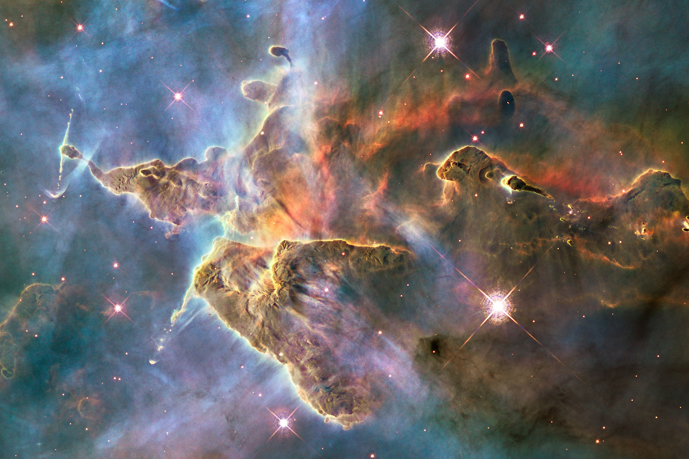
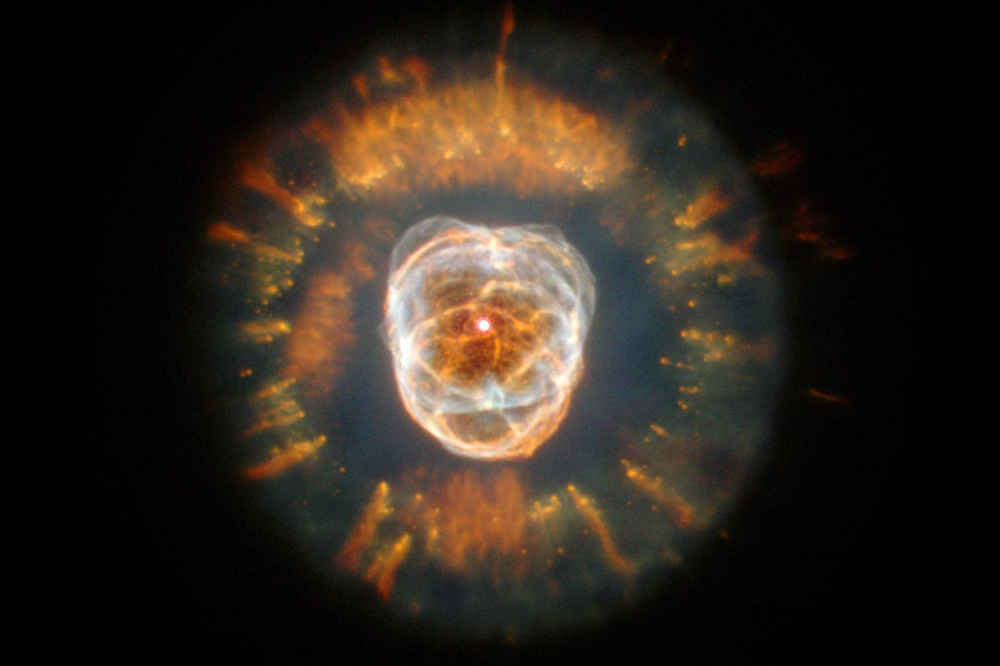
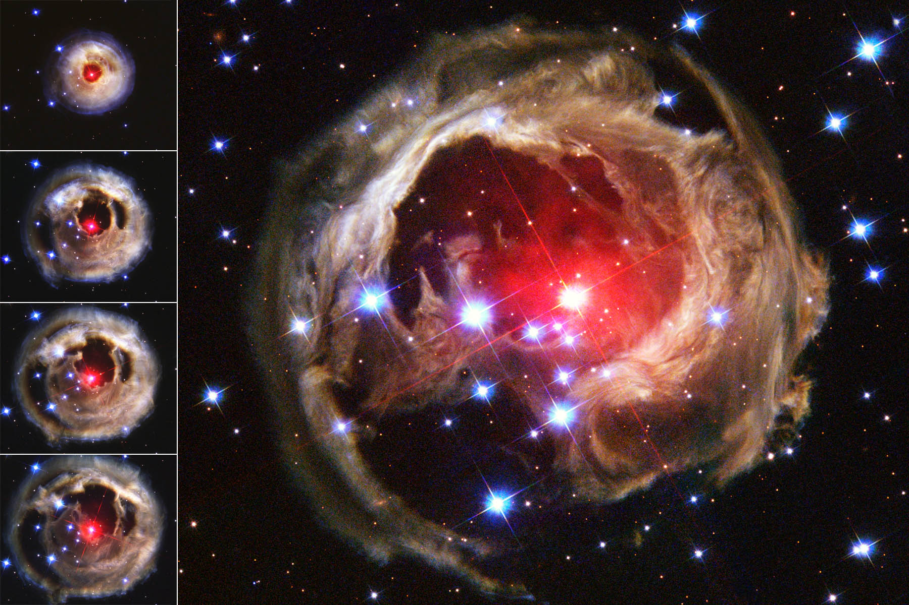

Mysitic Mountain
A mountain of dust and gas rises in the Carina Nebula. The top of a three-light-year tall pillar of cool hydrogen is being worn away by the radiation of nearby stars, while stars within the pillar unleash jets of gas that stream from the peaks.

The Eskimo Nebula
This planetary nebula began forming 10,000 years ago, when the dying star at its center began flinging out bubbles of gas and matter. The outer disk contains unusual, light-year-long filaments.

Star Monocerotis
The red supergiant star in the center of this image brightened suddenly for several weeks in 2002, illuminating dust that may have been ejected from the star during a previous explosion.